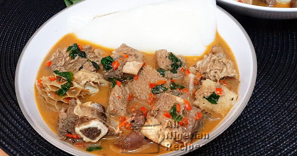

Pepper Soup

Nigrian Pepper Soup with Assorted meat
The Nigerian Pepper soup is a popular Nigerian soup recipe. It is such a versatile recipe as it can be prepared with different types of meat and fish. Thus there is the Chicken Pepper Soup, the Catfish Pepper Soup (popularly known as Point & Kill), the Goat Meat Pepper Soup, the Cow Foot Pepper Soup and the Assorted Beef Pepper Soup
Ingredients
- 1kg Chicken or Cow Foot or Assorted Beef
- 4 seeds Ehu or Ariwo or Calabash Nutmeg (can be grinded with spice/coffee grinder)
- Chilli Pepper (to taste)
- 2 teaspoons crushed Dry Uziza vegetable (optional)
- 2 medium onions
- Salt (to taste)
- 3 seasoning stock cubes
- 1 teaspoon of Thyme (for chicken pepper soup)
Cooking guide
prepare your Ingredients
- If preparing Chicken pepper Soup, it is preferable to use whole chicken instead of drumsticks. The different parts of the chicken will bring variety to the pepper soup. So wash and cut up the whole chicken and set aside.
- If you want to prepare Assorted Beef Pepper Soup then you should buy different parts of beef – best cut, offal (shaki, round-about, liver and kidney). Wash the offal thoroughly especially the round-about which should be turned inside out during the washing. Cut these into medium pieces, just big enough to be chewed in one go.
- For Cow Foot Pepper Soup, just wash and cut the cow foot into medium pieces. In this case also, make the pieces just big enough that it can be chewed in one go.
- Now it is time to prepare the 'secret' ingredient. Using an old frying pan, roast the Ehu seeds (stirring constantly) till you can smell it. Don't worry you will know when it is OK to take it off because it has a distinctive aroma. Another way to know that it is OK is to take one of the seeds and try to remove the outer membrane. If the membrane comes off easily, then the Ehu is done.
- Peel off the membrane from all the Ehu seeds and grind with a dry mill.
- Cut the onions into tiny pieces.
- Rub the dry uziza with your fingers to break them into tiny pieces.
Steps
- This cooking direction describes Chicken Pepper Soup. To prepare Goat Meat Pepper Soup, Cow Foot Pepper Soup or Assorted Beef Pepper Soup just substitute chicken with cow foot or beef and offal respectively.
- Place the pieces of chicken in a pot and pour enough water to cover the contents of the pot. Add the stock cubes, thyme and onions and cook till done.
- By now, you will notice that some of the water has dried. Add more water to bring it to the level of the contents of the pot.
- Add the ground Ehu, dry uziza, chilli pepper and salt to taste. Ehu has some spicy taste so you should add chilli pepper with care. Even though it is called pepper soup, you still want to be able to taste and enjoy the recipe itself. Too much chilli pepper will ruin it for you.
- Cover the pot and leave to boil for 5 minutes and the pepper soup is ready.